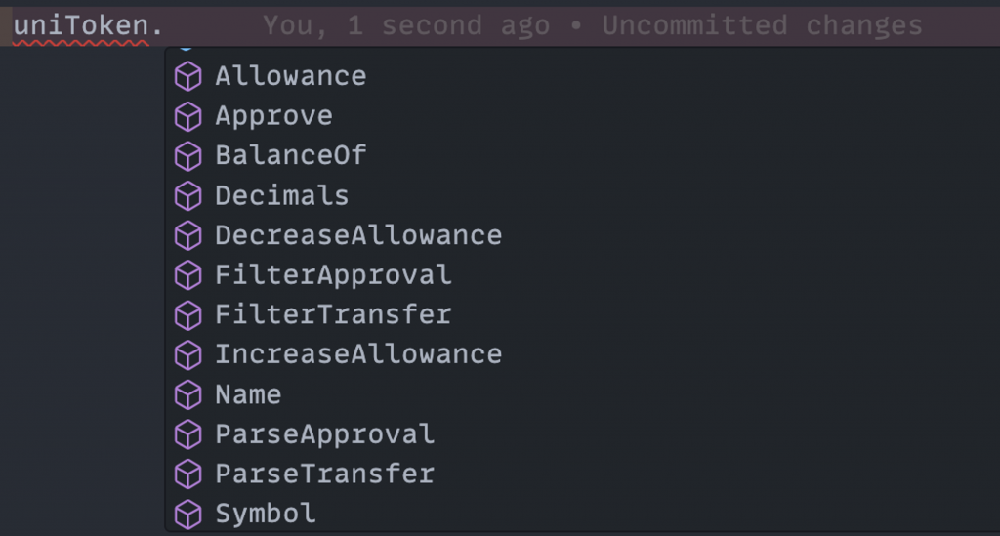
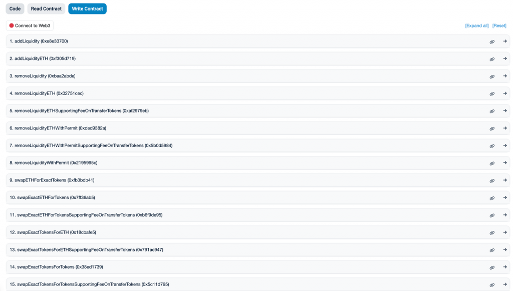
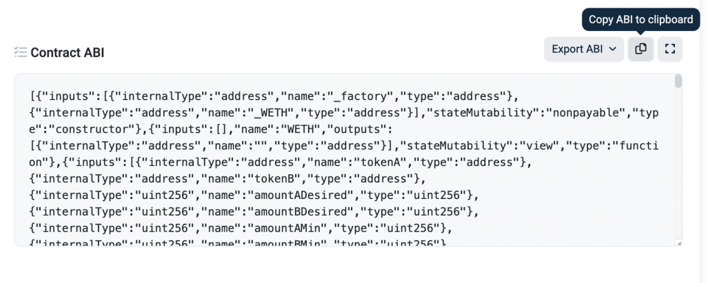
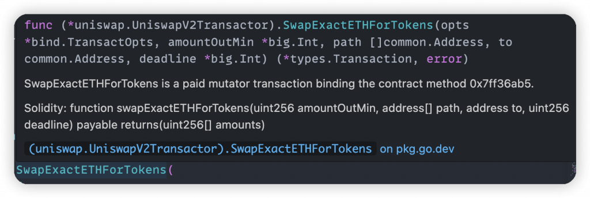
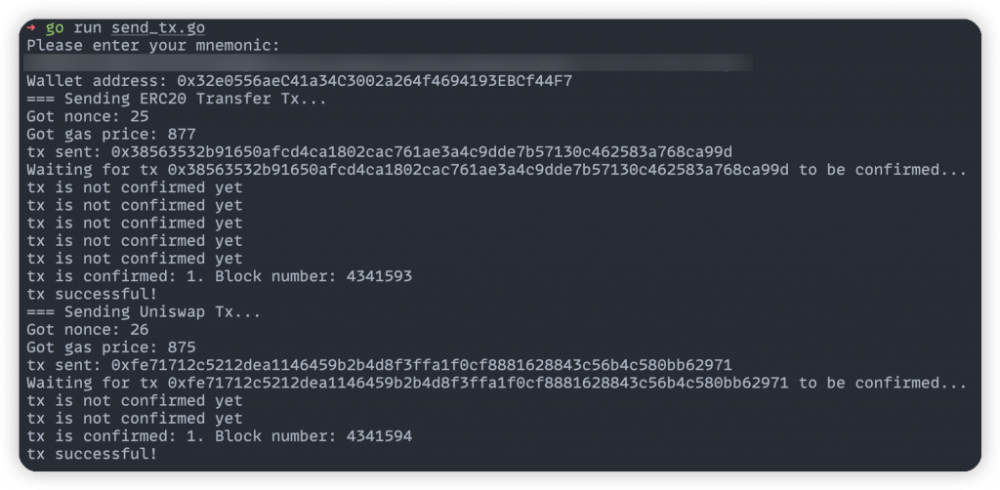

今天會延續昨天提到如何在後端發送帶有 call data 的交易，並使用 UNI Token 以及 Uniswap V2 在測試網上的合約作為範例，用 golang 來實作對這兩個合約發送交易。
在 Day 11 的內容中我們建立一個交易時用的方式是：
[code] tx := types.NewTransaction( nonce, common.HexToAddress(“0xE2Dc3214f7096a94077E71A3E218243E289F1067”), amountToSend, estimateGas, gasPrice, []byte{}, )
[/code]
其中最後一個參數是 data []byte 也就是這筆交易的 call
data，而如果要發送帶有 call data 的交易，以轉移 ERC-20 Token
為例，可能需要組出長得像這樣的 hex 字串：
[code] 0xa9059cbb000000000000000000000000e2dc3214f7096a94077e71a3e218243e289f10670000000000000000000000000000000000000000000000000000000000002710
[/code]
這代表當決定好要呼叫合約的
transfer(address dst, uint256 rawAmount) 並帶入指定的
dst, rawAmount
時，至少還要做以下的處理才能拿到完整 call data：
keccak256("transfer(address,uint256)") 取前四個
bytesdst 地址去除 0x 前綴並在左邊補零至長度
64rawAmount 數量轉成 16 進制並在左邊補零至長度 64可以想像當參數越來越多、型別複雜時，要做的處理就越多也很容易出錯，例如像
address[] 這種型別的參數被 ABI Encode 的方式並不直覺。
這時智能合約的 Go Binding 就非常有用了，他算是讓 Go 開發者方便用來跟 EVM 智能合約互動的介面，讓我們不需要手動編碼/解碼 ABI 資料，可以直接呼叫智能合約的方法或查詢其狀態，他同時處理好了型別的安全性。
值得一提的是 Go Binding 的概念是更廣泛的，他代表將某一語言或系統的特定功能「綁定」到Go 語言，讓開發者在 Go 語言中能直接使用該功能或API。例如當我想在 Go 中呼叫由 Python 寫的函式時，可以使用一些工具來建立 Go 和 Python 之間的 Binding。這樣在 Go 語言中就可以直接呼叫那些在 Python 中定義的函式和方法，而不需透過複雜的互動方式如執行 shell command 或使用 RPC 等等。
接下來就能介紹如何使用 ERC-20 的 Go Binding 還方便的跟 ERC-20 合約互動。有個 eth-go-bindings 套件已經寫好一些常見合約標準的 Binding，如 ERC-20, ERC-165, ERC-721, ERC-1155 等等，方便開發者直接操作這些類型的合約。以 UNI Token 的 ERC-20 合約為例，使用方式如下：
[code] import ( “github.com/ethereum/go-ethereum/common” “github.com/ethereum/go-ethereum/core/types” “github.com/ethereum/go-ethereum/ethclient” “github.com/metachris/eth-go-bindings/erc20” )
// connect to json rpc node
client, err := ethclient.Dial("https://eth-sepolia.g.alchemy.com/v2/" + os.Getenv("ALCHEMY_API_KEY"))
if err != nil {
log.Fatal(err)
}
// declare UNI token contract
const uniTokenContractAddress = "0x1f9840a85d5aF5bf1D1762F925BDADdC4201F984"
uniToken, err := erc20.NewErc20(common.HexToAddress(uniTokenContractAddress), client)
if err != nil {
log.Fatal(err)
}[/code]
建立 ethclient 的部分跟之前一樣，而套件提供了
erc20.NewErc20 可以獲得一個 ERC-20 的
binding，來看一下裡面有哪些 function 可以用：

很多都是熟悉的 ERC-20 properties / functions，如 name, symbol,
balanceOf, approve 等等。因此如果要查詢一個地址的 Balance，只要呼叫
BalanceOf 即可：
[code] balance, err := token.BalanceOf(&bind.CallOpts{}, ownerAddress) if err != nil { log.Fatalf(“Failed to retrieve token balance: %v”, err) }
[/code]
如果要發送 Token Transfer 的交易，可以先看一下
uniToken.Transfer function 的定義：
[code] // Transfer is a paid mutator transaction binding the contract method 0xa9059cbb. // // Solidity: function transfer(address recipient, uint256 amount) returns(bool) func (_Erc20 Erc20Transactor) Transfer(opts bind.TransactOpts, recipient common.Address, amount big.Int) (types.Transaction, error) { return _Erc20.contract.Transact(opts, “transfer”, recipient, amount) }
[/code]
只要傳入想轉移的 Recipient 跟 Token Amount 即可，這個 function
就會直接送出交易。因為是寫入操作，所以使用時需要多在 opts
參數提供 From, Signer, Value,
GasPrice 等欄位，才能組出並簽名完整的交易，範例如下：
[code] chainID := big.NewInt(11155111) tx, err = uniToken.Transfer( &bind.TransactOpts{ From: common.HexToAddress(address.Hex()), Signer: func(_ common.Address, tx types.Transaction) (types.Transaction, error) { return types.SignTx(tx, types.NewEIP155Signer(chainID), privateKey) }, Value: big.NewInt(0), GasPrice: gasPrice, }, common.HexToAddress(“0xE2Dc3214f7096a94077E71A3E218243E289F1067”), big.NewInt(1000000), ) fmt.Printf(“tx sent: %s”, tx.Hash().Hex())
[/code]
讀者可能會發現這裡沒有傳入 GasLimit 與
Nonce 的值，原因是 go-ethereum
在發交易時會自動偵測未填入的欄位，如果是他能自動填入的就會到鏈上查詢（也就是去打
eth_estimateGas 跟 eth_getTransactionCount RPC
method)。
有了以上套件我們已經能輕鬆跟一些標準合約互動了，但有時還是會遇到較特殊的合約 function，沒有別人寫好的 Go Binding 可以用。例如在 Sepolia 上的 Uniswap V2 合約，從 Contract Tab 可以看到他有許多複雜的 function：

接下來的目標是發送一個 Swap
交易。但是要怎麼方便的跟他互動呢？這就要用到 abigen
這個方便的工具了，它可以根據已部署的智能合約的 ABI 產生對應的 Go
binding。以 Uniswap V2 合約為例，可以先到 Contract Tab → Code
拉到最下面去複製這個合約完整的 ABI，並存成
uniswapv2.abi.json 檔案。

再來執行
abigen --abi uniswapv2.abi.json --pkg uniswap --type UniswapV2 --out UniswapV2.go
去產生 Uniswap V2 合約的 Go Binding，這些參數的意義是：
-abi: 指定輸入 ABI 檔案的路徑。
-pkg: 指定生成的 Go package 名。-type: 指定生成的 Go struct 的名稱。-out: 指定輸出檔案名稱。執行完成後把相關檔案放到獨立 package 中，就可以在 main 中宣告 Uniswap V2 合約了：
[code] import ( “github.com/a00012025/ironman-2023-web3-fullstack/backend/day18/uniswap” )
// main
const uniswapV2ContractAddress = "0xc532a74256d3db42d0bf7a0400fefdbad7694008"
uniswapV2, err := uniswap.NewUniswapV2(common.HexToAddress(uniswapV2ContractAddress), client)
if err != nil {
log.Fatal(err)
}[/code]
Uniswap 提供很豐富的 Swap functions，包含從 ETH Swap 成 Token、從 Token A Swap 成 Token B 等等，完整的 interface 可以參考 Uniswap V2 官方文件。
我們會嘗試實作的是把一點點 ETH 透過 Uniswap V2 去換成另一個
Token，因此要用到的會是 SwapExactETHForTokens
function，來看一下他的宣告：

對應到官方文件中的 swapExactETHForTokens function，簡單來說他的作用是給他固定數量的 ETH 並指定要 Swap 成什麼 Token，就可以幫你做 Swap。要呼叫他需要以下幾個參數：
amountOutMin: 交易執行後期望收到的最少 token
數量，作為市場價格波動的保護機制。
path: 這是一個地址陣列，指定了從 ETH 到目標 ERC-20
token 的轉換路徑。例如從 ETH 轉換成 WETH 再轉換成 UNI 時，則需要放入
WETH 與 UNI 的合約地址。to: 最終的 token 接收地址。deadline: 交易的截止時間（UNIX
timestamp），如果交易在此時間後都還沒被執行，則該交易將會失敗。我在 Uniswap V2 中找到了一個 Token 可以作為示範：ZKSlove，因此要把 ETH 轉換成他就需要經過 ETH → WETH → ZKSlove 的路徑，這樣就可以用以下程式碼發送 Swap 交易：
[code] chainID := big.NewInt(11155111) amountToSend := big.NewInt(100000) tx, err = uniswapV2.SwapExactETHForTokens( &bind.TransactOpts{ From: common.HexToAddress(address.Hex()), Signer: func(_ common.Address, tx types.Transaction) (types.Transaction, error) { return types.SignTx(tx, types.NewEIP155Signer(chainID), privateKey) }, Value: amountToSend, GasPrice: gasPrice, }, big.NewInt(0), []common.Address{ common.HexToAddress(“0x7b79995e5f793A07Bc00c21412e50Ecae098E7f9”), common.HexToAddress(“0xbd429ad5456385bf86042358ddc81c57e72173d3”), }, common.HexToAddress(“0x32e0556aeC41a34C3002a264f4694193EBCf44F7”), big.NewInt(999999999999999999), ) fmt.Printf(“tx sent: %s”, tx.Hash().Hex())
[/code]
因為要給他一些 ETH 做 Swap，就需要在 bind.TransactOpts
中指定要轉出的 Value。至於 amountOutMin
可以先用 0
來避免交易失敗（實際情況會根據匯率算出一個合理的值）， path
則帶入 WETH 以及該 Token 的合約地址，to
則帶入我自己的地址，deadline
先用一個很大的值確保不會超過。這樣就能成功送出交易了！完整的程式執行結果如下：

對應的 Tx 可以在 Sepolia Etherscan 上看到：UNI Token Transfer 與 Swap ETH to Token。
今天我們深入探討如何在後端發送帶有 call data 的交易。透過 Go Binding 和 abigen 的工具可以幫助我們輕鬆地完成這些操作，完整程式碼在這裡。明天我們會討論如何在後端同時發送多筆交易，並講解這其中可能遇到的問題與挑戰。